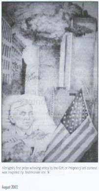

The World Trade Center Attack Not Predicted
Many Adventists have written to me after the September 11, 2001, World Trade Center (WTC) attack and claim that this event was a fulfillment of one of Ellen G. White's (EGW) prophecies. This is wishful thinking on their part and is their attempt to prove EGW is a prophet. Even the White Estate refutes that the WTC attack was a fulfillment of EGW's prophecy. The White Estate reply is at the end of this article.
To my knowledge there is not one prophecy that EGW has given that can be documented as given before the event. She wrote in her diary about events after they had occured and claimed "she saw" or that "she was shown them." It is interesting that Adventists constantly look to world events to see if they can "prop up" their prophet.
EGW's Prophecy:On one occasion, when in New York City, I was in the night season called upon to behold buildings rising story after story toward heaven. These buildings were warranted to be fireproof, and they were erected to glorify their owners and builders. . . .
The scene that next passed before me was an alarm of fire. Men looked at the lofty and supposedly fireproof buildings and said: "They are perfectly safe." But these buildings were consumed as if made of pitch. The fire engines could do nothing to stay the destruction. The firemen were unable to operate the engines.
I am instructed that when the Lord's time comes, should no change have taken place in the hearts of proud, ambitious human beings, men will find that the hand that had been strong to save will be strong to destroy. No earthly power can stay the hand of God. No material can be used in the erection of buildings that will preserve them from destruction when God's appointed time comes to send retribution on men for their disregard of His law and for their selfish ambition. —Testimonies for the Church, vol. 9, pp. 12, 13 (1909).
- If you will notice in EGW's prophecy she did not see jet planes crashing into the buildings by terrorists. She only saw an alarm of fire. This is a big difference.
- The buildings did not consume as made of pitch as described by EGW. The report tells us that the heat from the jet fuel was a factor which caused the building to fold in on itself and the weight of the upper floors caused the building to collapse to the ground.
Mrs. White said in vision that the NY buildings burned up like pitch. If so then why did it take NY City about 8 months, working around the clock, to haul all the debris from the site? If those towers burned up like pitch, then the cleanup should have been really quick since there would be little left to haul off. - EGW said it was God's punishment of the owners of the buildings. The WORLD TRADE CENTER was not owned by private persons, but the New York Port Authorities. This was a terrorist act—not God's punishment of the NY Port Authorities.
- EGW said, "the firemen were unable to operate the engines." Some fire engines were destroyed by the falling debris from the twin towers, but other fire engines did "operate" pouring water on the buildings. This proves that the WTC destruction was not a vision of EGW.
The White Estate does not see this as a prophecy of the destruction of the WTC by Ellen White. Below is from the White Estate:
Conflicts in the Last Days
"Note: The terrorist attacks on the World Trade Center and the Pentagon on September 11, 2001, brought shock and horror to the citizens of the United States of America and to the rest of the world. The sympathies and prayers of Seventh-day Adventists are with all who have been affected by the tragic happenings of that day. In view of those events, we are reminded of what Ellen White wrote concerning the need to share the good news of the Gospel and Christ's soon return to the millions who live and work in our world's large cities-many of whom are spiritually unprepared for the troubles and destruction coming on the world in the last days.
"Contrary to unsubstantiated reports, Ellen White made no prediction concerning the destruction of a twin-towered building in New York or any other place in the world. She did foresee great disasters of various kinds resulting in the loss of magnificent buildings and many lives in the large cities before Jesus' return. She spoke of demonic forces exercising their power in earthquakes, fires, and other calamities. She also warned that the time will come when defiant rejection of God's Spirit will result in the complete removal of His restraining power over such…" Ellen G. White Estate—Conflicts in the Last Days.
After denying EGW had the WTC Vision the Adventism gives an award for a "lying painting."
The Adventist Church Gave a $1000 Award For a Painting of EGW Having a WTC Vision That Ellen Did Not Have!

In the 2002 August Issue of the Adventism's Mid-America Outlook, pp. 21,22:
" …The Gift of Prophecy Art Contest was sponsored jointly with the EGW White Estate and Southwestern Adventist University. Submissions were judged on accurately depicting a subject from the writings of Ellen White."
"Paula Albright was awarded the first prize of $1000 dollars in the 18-30 category for painting which was inspired by passages in Testimonies for the Church, Vol. 9. Her paintings will be exhibited at the Meadows Faller at Southwestern Adventist University in Keene, Tex, and at the offices of the world headquarters of the Seventh-day Adventist Church in Silver Springs, Md."
"The painting by Paula Albright shows EGW lying on a bed in vision with the American flag draped over her body and the World Trade Center on fire with smoke rolling out of the buildings from the jet airliners that crashed into them."
Many Adventists have written to me claiming the September 11, 2001, World Trade Center attack was a fulfillment of EGW's vision found in Vol. 9 of the Testimonies p. 12,13. I am sure many of these "White-Washed Ones" also wrote to the White Estate hoping to get their support for their prophet's vision. The Ellen G. White Estate rightly admitted that Ellen White did not have a vision of the WTC attack. They went on record to this fact on the EGW Estate website.
Why did Paula Albright draw a picture of EGW that was not true? We should give her the benefit of the doubt that she is truly White-Washed and believes that the WTC attack was a fulfillment of a vision by EGW.
The Mid-America Conference said the contest was judged on "accuracy". Where is the accuracy in this painting?
The White Estate denounced the WTC attack by saying that it was not a fulfillment of a vision by Ellen White. Why was an award granted for a painting that did not accurately depict EGW having such a vision? Was not the Adventist Mid-America Union Conference also aware that EGW did not have the WTC vision? They sure should have known, as they are part of the Adventism. It is unbelievable that the EGW Estate did not enlighten them.
Is the White Estate really going to allow this painting, which they admit is not true, to be hung on the walls of the Adventist world headquarters? If they do, we will be able to see their dishonesty.
Is the EGW Estate collecting false items to go along with the EGW "heavy Bible," she was supposed to hold out in vision for hours? There is also a memorial plaque at EGW's grave saying she had 2000 visions. This also is a fable and cannot be proved.
Once again we can see how official Adventist publications promote lies and myths about Ellen G. White with the blessing of the EGW Estate.
The honest thing for the EGW Estate and the Adventist Mid-American Conference to do is to let Paula Albright know that her painting was not true and "accurate" and let her keep the $1000 for her effort. It was not her fault she was misled by her church to believe EGW was a prophet.
The Mid-American Conference should also print a correction in the next issue of Mid-America Outlook explaining their mistake by awarding to Paula first place for a painting that did not depict EGW's vision "accurately."
Sections
Robert K. Sanders, Founder and Editor of Truth or Fables, 1997–2012
Life Assurance Ministries assumed ownership of Truth or Fables in 2012
© 2016 Life Assurance Ministries. All rights reserved.